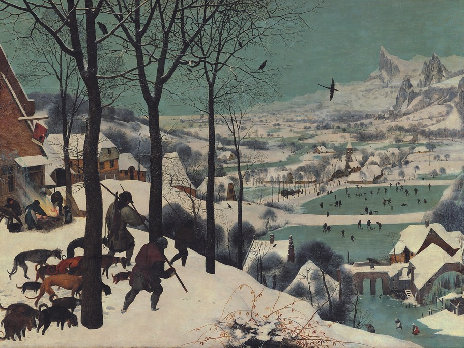
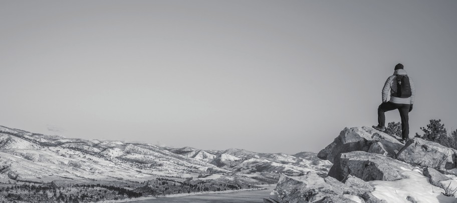
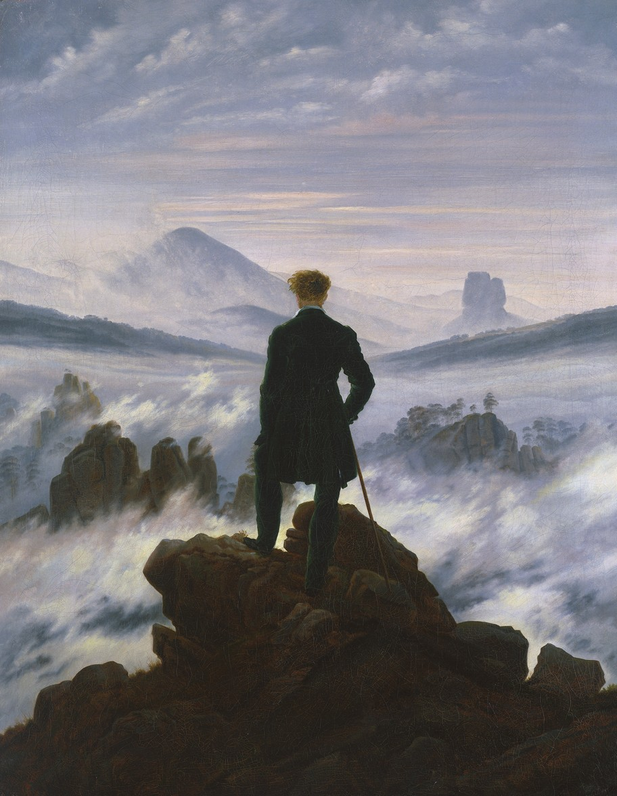

3줄 요약
- 브뤼헐의 《눈 속의 사냥꾼》은 겨울을 살아가는 사람들의 노동과 놀이를 촘촘히 담아, 사람이 있어 풍경이 살아 있는 세계가 됨을 보여준다.
- 프리드리히의 《안개 바다 위의 방랑자》는 거대한 자연 앞에 홀로 선 한 사람의 등 뒤에 관람자를 세워 인간의 내면을 들여다보게 한다.
- 같은 장소에 서 있어도 무엇을 바라보느냐에 따라 전혀 다른 풍경이 펼쳐진다.
풍경화 속 사람은 언제나 주인공이었을까? 산과 들, 강과 바다를 그린 그림을 들여다보면 인간은 때로 아주 작은 점처럼 등장한다. 누군가는 눈 덮인 마을로 돌아가고, 누군가는 아득한 산봉우리 앞에 홀로 서 있다. 그런데 그 작은 사람 하나가 그림 전체의 의미를 바꾸기도 한다. 사람이 어디에 서 있는지, 무엇을 바라보는지에 따라 풍경은 단순한 자연의 모습에서 삶의 이야기가 되고, 때로는 인간의 내면을 비추는 거울이 된다.
16세기 네덜란드 화가 피터르 브뤼헐의 《눈 속의 사냥꾼》과 19세기 독일 낭만주의 화가 카스파르 다비트 프리드리히의 《안개 바다 위의 방랑자》.
두 작품은 모두 거대한 자연 속에 인간을 배치하지만, 사람과 풍경이 맺는 관계는 사뭇 다르다. 하나는 사람들이 살아가는 세계를 넓게 펼쳐 보이고, 다른 하나는 자연 앞에 선 한 사람의 내면으로 우리를 이끈다.

눈 덮인 풍경에도 삶은 계속된다
눈이 온 세상을 뒤덮었다. 작품 왼쪽 아래에는 사냥을 마치고 마을로 돌아가는 세 명의 사냥꾼과 개들이 보인다. 어깨를 축 늘어뜨린 사냥꾼의 모습으로 보아 오늘의 사냥은 그리 성공적이지 못했던 모양이다. 그들이 가져온 것은 작은 여우 한 마리뿐이다. 하지만 그림 속 겨울은 사냥꾼들의 아쉬움과는 상관없이 분주하게 흘러간다. 시선을 조금 더 아래로 옮기면 얼어붙은 연못에서 스케이트를 타는 사람들, 썰매를 끄는 사람들, 불을 피우는 마을 사람들의 모습이 나타난다. 눈 덮인 지붕과 앙상한 나무들, 멀리 이어지는 산맥까지. 그림 속에는 겨울을 살아가는 사람들의 하루가 촘촘하게 담겨 있다.
브뤼헐은 1565년, 계절의 변화를 주제로 한 연작의 일부로 이 작품을 그렸다. 당시 풍경화는 종교적·역사적 사건을 담는 그림에 비해 독립적인 주제로 주목받기 시작하던 시기였다. 그는 자연을 단순한 배경으로 취급하지 않았다. 계절에 따라 달라지는 풍경과 그 안에서 살아가는 사람들의 노동과 놀이를 함께 그려냈다. 이 그림에서 사람은 자연을 지배하는 주인공도, 그저 풍경을 장식하는 작은 존재도 아니다. 추위를 견디고, 일하고, 놀고, 집으로 돌아가는 사람들의 모습이 모여 겨울이라는 계절을 완성한다. 사람이 있기에 풍경은 살아 있는 세계가 된다.

어쩌면 새로운 장면을 만나는 일은 낯선 장소에 도착하는 것보다 지금 서 있는 자리에서 무엇을 바라보느냐에 달려 있는지도 모른다.
자연 앞에 홀로 선 사람

이번에는 전혀 다른 풍경을 만나보자. 작품 한가운데, 바위산 꼭대기에 한 남자가 서 있다. 짙은 초록색 외투를 입고 지팡이를 든 그는 우리에게 등을 돌린 채 안개로 가득한 산맥을 바라본다. 발아래로는 구름인지 안개인지 알 수 없는 흰 물결이 산봉우리 사이를 가득 메우고, 저 멀리 또 다른 산들이 희미하게 모습을 드러낸다. 그가 어디를 바라보는지, 무슨 생각을 하고 있는지는 알 수 없다. 얼굴도 보이지 않고, 주변에는 함께 이야기를 나눌 사람도 없다. 그저 거대한 자연 앞에 홀로 서 있을 뿐이다.
독일 낭만주의를 대표하는 화가 카스파르 다비트 프리드리히는 자연을 인간의 감정과 정신을 비추는 대상으로 바라보았다. 19세기 낭만주의 예술가들에게 자연은 아름다운 풍경을 넘어 경외감과 두려움, 동경과 고독을 불러일으키는 존재였다. 인간의 힘으로 헤아리기 어려운 자연의 광대함 앞에서 자신의 존재를 돌아보는 경험, 이를 숭고함이라는 미학적 개념으로 설명하기도 한다.
그는 산 정상에 도착한 사람일까, 아니면 이제 막 새로운 여정을 시작하려는 사람일까? 이미 도달한 곳보다 아직 눈앞에 펼쳐지지 않은 곳을 바라보는 모습은 우리에게 저마다 다른 이야기를 떠올리게 한다.
같은 풍경, 다른 시선
두 작품을 나란히 놓고 보면 흥미로운 차이가 드러난다. 브뤼헐의 그림에는 수많은 사람이 등장한다. 각자 다른 일을 하고 있지만 그들의 움직임이 모여 하나의 공동체와 계절을 만들어낸다. 반면 프리드리히의 그림에는 단 한 사람만 등장한다. 그는 주변 사람들과 관계를 맺기보다 자연 앞에서 자기만의 시간을 보내는 듯하다.
풍경을 바라보는 시선도 다르다. 브뤼헐은 높은 곳에서 내려다보듯 넓은 세계를 펼쳐 보인다. 관람자는 화면 곳곳을 자유롭게 돌아다니며 사람들의 일상을 발견한다. 프리드리히는 한 인물의 등 뒤에 관람자를 세운다. 그의 시선을 따라가다 보면 어느새 그림 속 풍경을 바라보는 또 다른 방랑자가 된 듯한 기분이 든다.
이 차이는 두 시대가 자연과 인간을 바라보는 방식의 변화를 보여주기도 한다. 브뤼헐에게 풍경은 사람들이 살아가는 구체적인 삶의 터전이었다면, 프리드리히에게 풍경은 인간의 내면과 마주하는 공간이 되었다. 한쪽이 세상 속 인간의 모습을 보여준다면, 다른 한쪽은 자연 앞에 선 인간의 마음을 들여다보게 한다.
풍경 속에 들어가 비로소 보이는 것들
우리는 여행지에서 풍경을 바라볼 때도, 매일 오가는 길을 걸을 때도 저마다 다른 장면을 발견한다. 누군가는 그곳에 살아가는 사람들의 일상에 눈길을 주고, 누군가는 끝없이 펼쳐진 자연 앞에서 자신의 생각에 잠긴다. 같은 장소에 서 있어도 무엇을 바라보느냐에 따라 전혀 다른 풍경이 펼쳐진다.
브뤼헐의 그림 속 사람들은 풍경에 삶의 온기를 더하고, 프리드리히의 방랑자는 풍경을 바라보는 우리의 시선을 일깨운다. 사람은 풍경을 완성하는 존재이면서 동시에 풍경을 새롭게 해석하는 존재이기도 하다.
어쩌면 새로운 장면을 만나는 일은 낯선 장소에 도착하는 것보다 지금 서 있는 자리에서 무엇을 바라보느냐에 달려 있는지도 모른다. 때로는 멀리 펼쳐진 세계를 바라보고, 때로는 발밑의 작은 움직임에 주목하는 것. 익숙한 풍경에 새로운 시선을 더하는 순간, 우리가 보던 세상도 조금씩 다른 모습으로 다가온다.